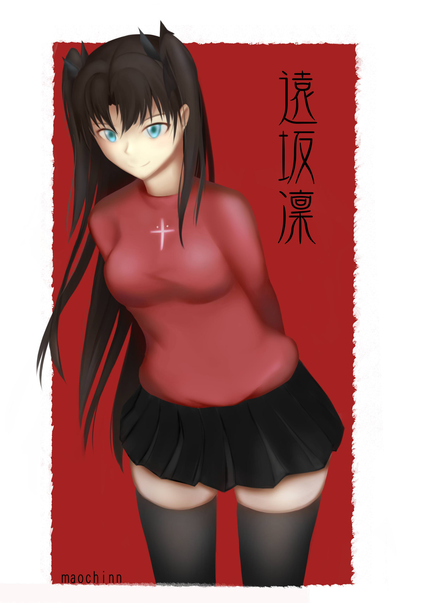

<div id="article_content" class="text-paragraph article_container">畫完要PO才發現剛好趕上誕生日ww<div><br></div><div></div><div><br></div><div>一樣的用噴槍打稿</div><div>然後修邊修到快往生，上色就隨便噴噴啦~</div><div><br></div><div>有空補過程</div><div>以上!</div><div><br></div><div><br></div><div><div>想追蹤比較多日常還請走:<a href="https://www.facebook.com/Bushyeyebrowscat/" target="_blank"><font color="#FF0000"><font color="#FF0000">專頁</font></font></a></div><div><a href="https://www.facebook.com/Bushyeyebrowscat/" target="_blank"><font color="#FF0000"><font color="#FF0000">帽捲maochinn-繪圖坊</font></font></a></div><div><br></div><div><a href="https://www.pixiv.net/member.php?id=6856401" target="_blank"><font color="#FF0000"><font color="#FF0000">P站</font></font></a></div><div><font color="#FF0000"><a href="https://www.pixiv.net/member_illust.php?mode=medium&illust_id=67085324" target="_blank">給讚</a></font></div></div><div><br></div><script>
$('article.c-text img').load(function () {
// 表格內圖片大於表格寬時，設為 100%
if ($(this).parents('table').length != 0) {
if ($(this).width() >= $(this).parents('td').width()) {
$(this).width('100%');
} else {
$(this).width($(this).width() + 'px');
}
}
});
</script></div>